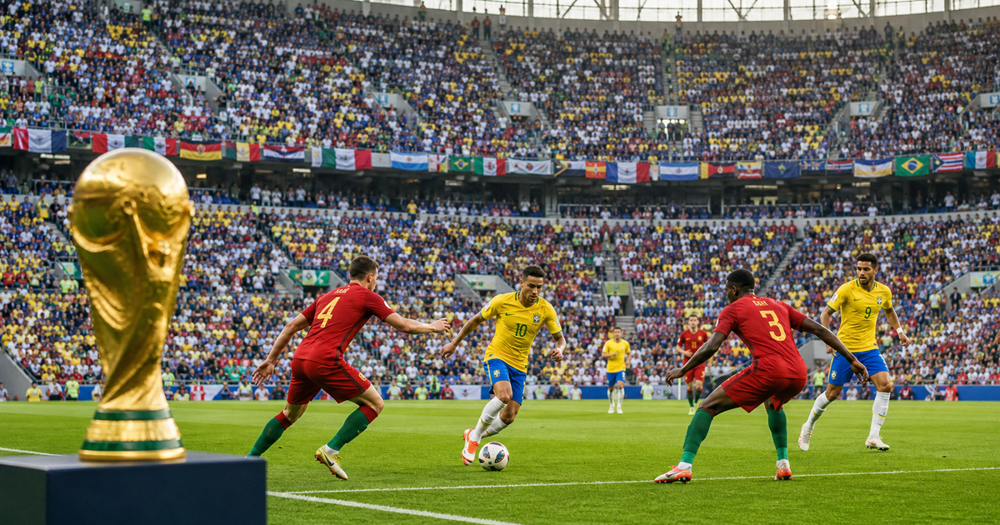
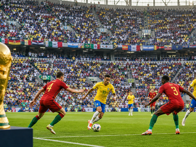

FIFA World Cup
First final1930
Current hostsCanada / Mexico / USA
Top 4 title leaders

More footballFootball topicMore finals, tournaments and calendar moments.


More footballFootball topicMore finals, tournaments and calendar moments.